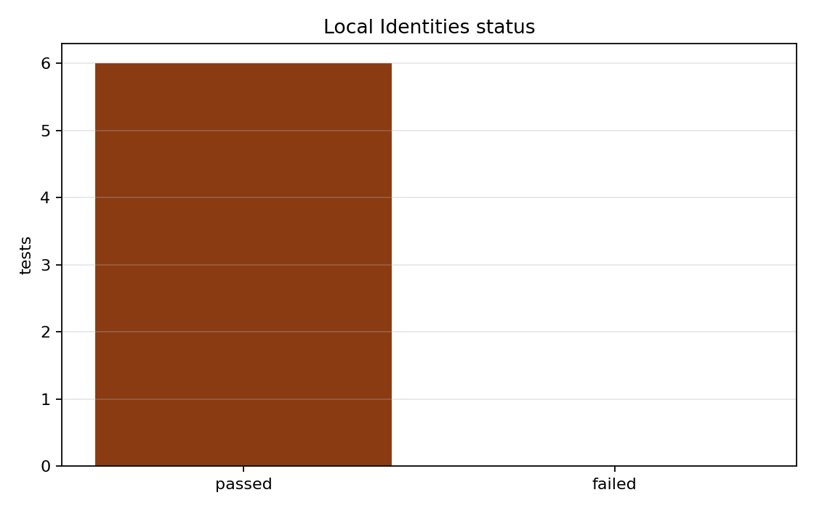

Benchmark
Local Identities
Family: foundations
Exact local algebraic identities and constitutive surfaces.
Target and Success Criteria
target_kind: Analytic
Tier: full
Unknowns active: symbolic and constitutive identities
Frozen terms: runtime solver and spatial discretization
Comparison grammar: Achieved / Target
Tickets: None
What This Benchmark Verifies
This exact benchmark confirms algebraic and constitutive identities before coupled dynamics are exercised.
tests_passed
6
count
pass
tests_failed
0
count
pass
Primary Plots
plot

Pass/fail status for the exact identity module.
plots/pytest-status.png
Figures and Media
No media artifacts provided.
Scalar Summary
| Label | Value | Unit | Comparison | Threshold | Severity |
|---|---|---|---|---|---|
| tests_passed | 6 | count | 6 | 6 | pass |
| tests_failed | 0 | count | 0 | 0 | pass |
Evidence Table
| Label | Metric | Comparison | Threshold | Severity |
|---|---|---|---|---|
| test_phasefield_semantics_are_exact_complements_on_minus_one_to_one_grid | pytest_outcome | passed | passed | pass |
| test_symmetric_cubic_indicator_matches_numeric_and_ufl_forms | pytest_outcome | passed | passed | pass |
| test_symmetric_double_well_cutoff_split_is_exact_and_consistent | pytest_outcome | passed | passed | pass |
| test_phase_interpolated_coefficients_and_osmotic_closure_match_closed_forms | pytest_outcome | passed | passed | pass |
| test_finite_strain_growth_kinematics_match_closed_form_with_prestretch | pytest_outcome | passed | passed | pass |
| test_derived_output_surface_exposes_expected_fields_and_order | pytest_outcome | passed | passed | pass |
Series Overview
| Plot | Group | Observable | Case | Level | Target |
|---|---|---|---|---|---|
| pytest_pass_counts | analytic_target | Passed exact checks | module | exact | all tests |
Cases
Case
module
Collected pytest verification cases from test_local_identities.py.